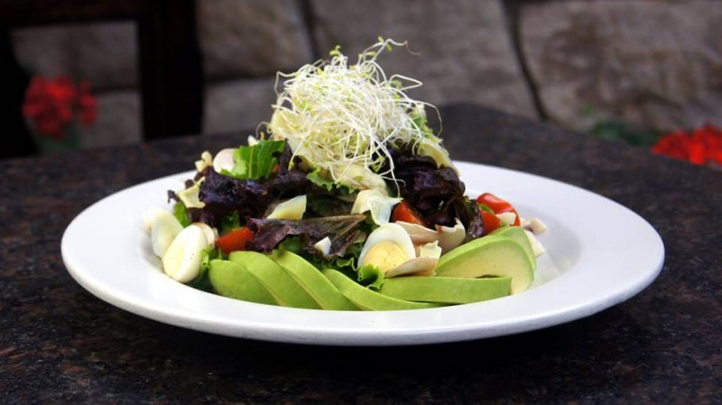
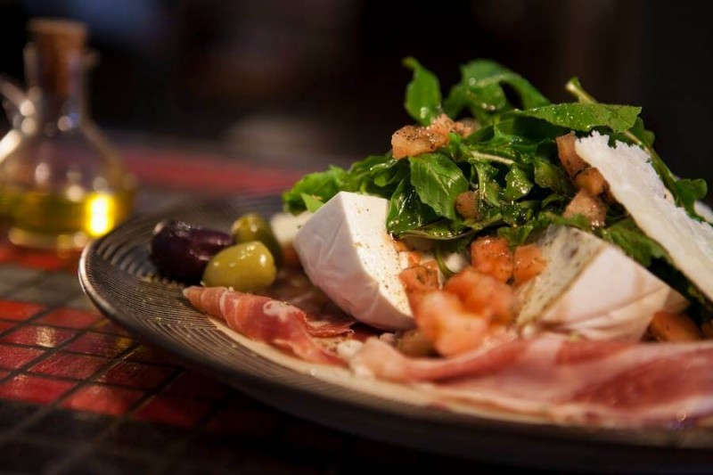
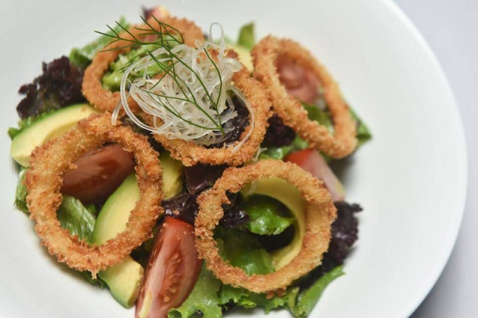
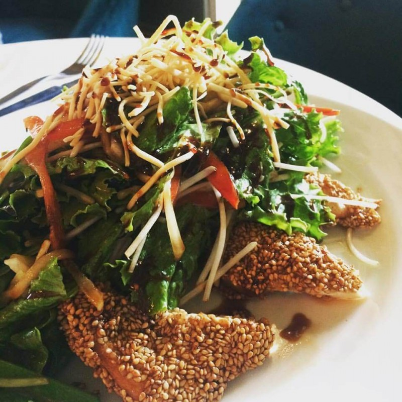
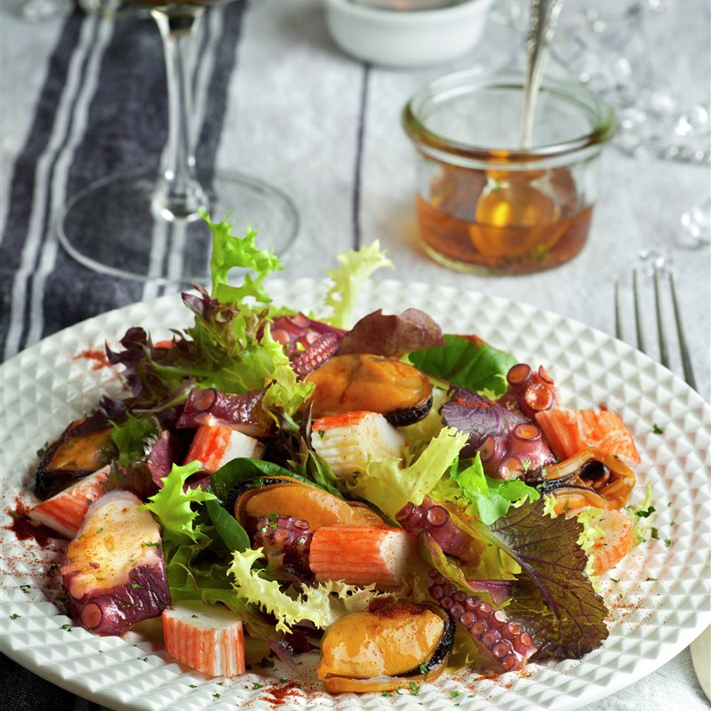
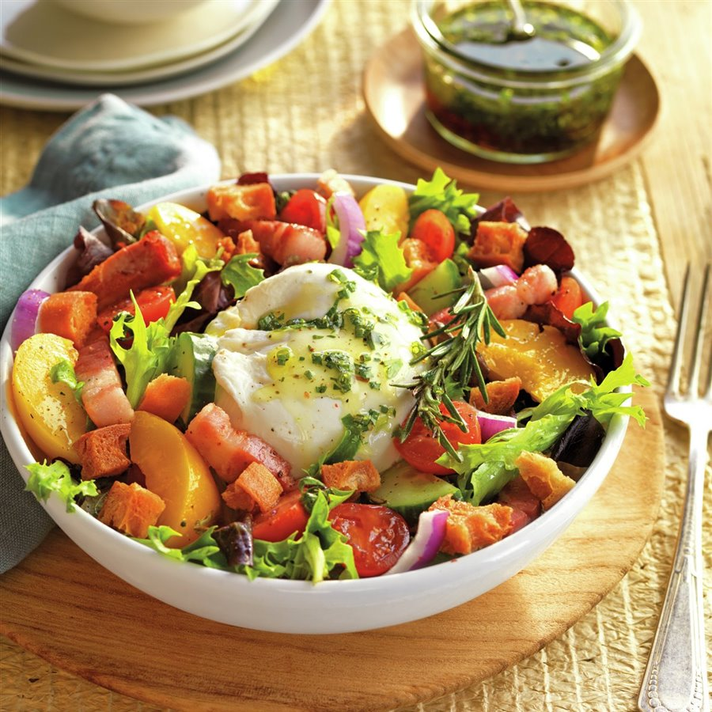

|
Ensaladas frutos del mar
$210 |
Fresca ensalada de mariscos con mango, taperiba, papaya verde y vinagreta de casho |
|  |
Piccola
$170 |
Mix de lechugas, champiñones, palmitos, tomate cherrys, alcachofin, palta en gajos y huevo de codorniz. |
|  |
Insalata Caprese Tricolore
$185 |
Queso mozzarella, prosciutto, grana padano, tomates, aceitunas negras y verdes, arúgula y albahaca, olivo extra virgen y balsámico |
|  |
Ensala parrillera
$160 |
Mix de lechugas, tomates, aros de cebolla, juliana de hinojo, palta y vinagreta de la casa |
|  |
Ensalada oriental
$175 |
Pechuga de pollo en costra de ajonjolí, variadas lechugas, jolantao, brotes de soya y más al aliño oriental, coronada con lluvia de pasta crocante. |
 |
Ensalada tropical de arroz con gambas, piña y curry
$190 |
Presentada dentro de la misma piña, esta ensalada destaca por sus vistosos colores y por la gran variedad de ingredientes que lleva. En el momento de comerla, sus diferentes texturas y sabores conquistarán el paladar de los comensales. |
|  |
Salpicón de marisco con vinagreta
$200 |
Para aliñar el plato, prepara una vinagreta sencilla, a base de aceite, vinagre, perejil, un poco de zumo de limón, sal y pimienta. |
|  |
Ensalada de burrata con beicon y fruta
$190 |
Vistosa y muy llamativa, está elaborada con ingredientes de tantos colores y de texturas tan distintas que será un auténtico festín para el paladar. Además, como es tan completa desde el punto de vista nutricional. |